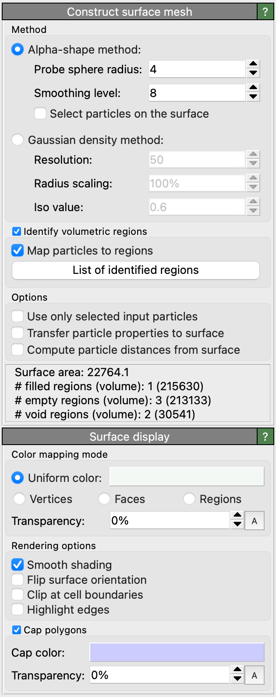

Construct surface mesh
{kind=link}
This modifier constructs a surface manifold made of vertices and faces representing the three-dimensional morphology of a group of particles. In other words, it generates a geometric mesh describing the outer and inner boundaries of an atomistic structure.
Such a surface mesh representation is useful not only for visualization purposes but also for measuring the surface area, solid volume, and porosity of an atomistic structure.
Input
Output
Supported surface algorithms
The modifier offers two alternative methods for constructing a surface mesh: the alpha-shape method and the Gaussian density method, which will be described in subsequent sections in more detail. Both approaches have specific advantages and limitations and should be employed depending on the type of input model:
|
|
The alpha-shape method assumes that the particles themselves are all point-like, i.e., their radii are ignored. Instead the concept of a virtual probe sphere is introduced to define which regions of space are accessible and which are not – without the probe sphere touching any of the atomic sites. The interface manifold constructed by the algorithm separates these different regions of space. The algorithm provides the capability to measure filled and empty region volumes and to analyze the porosity of a structure. Furthermore, it determines which particles are located exactly on the boundary, making it a well-defined criterion to discern surface atoms from interior bulk atoms in a structure.
The second method is based on a smeared-out representation of the finite-sized particle spheres in terms of overlapping Gaussian distribution functions centered at each particle. The resulting density field, which is computed on a discrete grid, has local maximums at each particle site and decays to zero away from the particles. The constructed surface boundary represents an isosurface of the Gaussian density field, with the iso-level chosen such that the resulting surface roughly matches the finite diameters of the original particle spheres. This approach thus provides the advantage of accounting for the finite extent of the atomic spheres, which can be important in case of small molecules that do not form a bulk structure, i.e. where most of the atoms are located at the surface. Since OVITO Pro 3.8, this method also provides the capability to quantify filled and empty volumes and to identify individual pores in a structure, for example.
General options
This option lets you exclude some parts of the system from the surface construction if needed, for example, all solute atoms which are not part of the structure of interest.
The total surface area of the constructed manifold is displayed by the modifier in the status area and
is output as a global attribute named ConstructSurfaceMesh.surface_area.
Note that the surface area is always given in units of squared length of the simulation model.
OVITO provides the capability to locally associate quantities with the surface mesh and adopted them from nearby particles during the surface construction process.
If the option Transfer particle properties to surface is turned on, existing attributes of the input particles located at the surface,
for example their Color property, will be copied over to the vertices of the constructed
surface mesh. That means the input particle attributes will be available as
vertex properties of the output mesh, and you can subsequently use the color mapping mode of the Surface mesh visual element to
visualize the variation of some quantity of interest across the surface.
Note
When using the the Gaussian density method
only continuous particle properties of data type Float will get transferred
over to the surface. Discrete integer properties will not because the algorithm has to blend the property values from several particles
to compute the resulting field value at each mesh vertex. In case of the alpha-shape method, there exists a one-to-one mapping
between particles and mesh vertices and no blending is needed. Therefore all types of properties will be transferred to the mesh.
{kind=link}
Upon request, the modifier can compute the distance of each particle to the closest point on the constructed surface.
The computed distances are stored as a new particle property named Surface Distance, which
may subsequently be used to select particles within a certain range from the surface, e.g. using the Expression selection modifier.
Note, however, that the distance calculation is a very expensive operation, which can take a long time for systems with many particles or a complex surface.
If you just want to select particles located exactly on the surface, then the
option Select particles on the surface should be used instead. It is only available for the alpha-shape method and lets the modifier
directly select particles that are part of the surface mesh, i.e. which are touched by the virtual probe sphere.
Periodic systems and cap polygons

OVITO correctly handles systems with periodic boundary conditions (including mixed open and periodic conditions). The simulation box here constitutes a periodic domain where the surface manifold is embedded in. The constructed surface may wrap around at the box boundaries and even reconnect to itself to form an infinite manifold. Furthermore, there are two particular situations where the surface will turn out degenerate (i.e. a mesh with no faces): (i) A simulation box containing no particles or without particles forming any solid region, and (ii) a periodic simulation box densely and completely filled with particles. In case (i) there will be single space-filling empty region and in case (ii) a single space-filling solid region. OVITO differentiates between the two degenerate cases when it comes to visualization of cap polygons.
For visualization a surface cut by a periodic simulation box boundary is wrapped around and reenters on the opposite side of the box. For the sake of clarity, the Surface mesh visual element of OVITO provides the option to render so-called cap polygons to close the holes in the surface that occur due to these cuts at the box boundaries. Cap polygons make it easier for an observer to discern solid regions from empty regions.
How the alpha-shape algorithm works
The procedure for surface reconstruction from a set of point-like particles or atoms is described in
which is also the reference you should cite when publishing quantitative results obtained with this analysis tool. The method makes use of a Delaunay tessellation constructed on the basis of the input particle coordinates. It tessellates space into tetrahedral simplices, which are subsequently classified as either belonging to a filled spatial region or an empty spatial region. Finally, the surface manifold is constructed as the separating boundary between the empty and the filled regions of space.
(a) The Delaunay tessellation calculated from the input point set. (b) The circumscribed spheres of two exemplary tessellation elements are highlighted. One element’s circumsphere is larger than the probe sphere while the other one is smaller. Consequently, the elements are classified as open and solid, respectively. (c) The union of all solid Delaunay elements defines the geometric shape of the atomistic solid (bold line).
The concept of a probe sphere with a prescribed radius (alpha parameter) is employed to assign each tetrahedral Delaunay element to either the empty or the filled region. Generally, the empty region is defined as the union of all locations in space that are accessible to the virtual probe sphere without touching any of the input particle centers. Note that this includes any cavities inside the solid too as long as they can accommodate the virtual sphere without it overlapping with any particles. The radius of the probe sphere is a length scale parameter that determines how much detail and small features (e.g. pores) of the geometric shape will be captured by the method.
(a) Atomistic model of a carbon nanoparticle with an inset showing the corresponding pair distribution function. The position of the first peak is used as probe sphere radius (\(R_{\alpha}=2.5\,\text{Å}\)) for the alpha-shape construction. (b) The resulting triangulated surface mesh. (c) Final surface model after six iterations of the smoothing algorithm were applied.
The alpha-shape method, originally introduced by Edelsbrunner and Mücke [ACM Trans. Graph. 13:43–72, 1994], compares the circumscribed spheres of the tetrahedral Delaunay elements (figure b) to the probe sphere to efficiently decide which regions of space can accommodate the probe sphere without any overlap and which thus become part of the empty spatial region. The remaining tetrahedra form the filled (solid) region. Finally, the closed surface mesh can be constructed, which consists of all triangular faces of the three-dimensional Delaunay tessellation that separate solid from open tetrahedra (figure (c)).
The resulting surface mesh still reflects the atomic steps that are typically present on the surfaces of an atomistic object. The contribution of surface steps may lead to an overestimation of the macroscopic surface area. Therefore one can subsequently apply a fairing procedure [Taubin, SIGGRAPH 95 Conf. Proc., pp. 351-358, 1995] to the surface mesh to smoothen out the steps.
It should be emphasized that the results of the described surface reconstruction method will generally depend on the selected probe sphere radius parameter \(R_{\alpha}\). A rule of thumb for choosing \(R_{\alpha}\) is to use the nearest neighbor atom separation distance in the material at hand as demonstrated in figure (a) on the right. OVITO allows you determine the first peak of the radial pair distribution function \(g(r)\) with the Coordination analysis modifier if needed. Generally, you should report the value of \(R_{\alpha}\) in your publications when measuring surface area, solid volumes, or porosities.
Parameters
- Probe sphere radius
This parameter controls the radius of the probe sphere used in the surface construction algorithm (\(R_{\alpha}\)), which determines the level of surface details captured. A larger sphere radius leads to a surface with less details, which reflects only coarser features of the surface topology. A small sphere radius, on the other hand, will resolve finer surface features and small voids inside a solid. However, the sphere radius should not be smaller than half of the typical interatomic distance. Otherwise artificial holes will appear in the constructed surface.
A rule of thumb is to choose this parameter equal to the nearest neighbor atom separation in the material at hand. You can use the Coordination analysis modifier to determine the nearest neighbor separation, which is the position of the first peak in the radial pair distribution function.
- Smoothing level
After the triangulated surface mesh has been constructed, it is further refined by applying a smoothing and fairing algorithm to remove atomically sharp surface steps. This parameter controls how many iterations of the smoothing algorithm are performed.
- Select particles on the surface
This option makes the modifier create a new particle selection that includes all input particles that are located right on the surface mesh.
How the Gaussian density method works
{kind=link}
This approach generate an isosurface of a volumetric density field computed from the superposition of 3d Gaussian functions placed at each particle site [Krone et al., 2012]. The density map generation algorithm accumulates Gaussian densities on a uniformly-spaced 3d lattice within a bounding box large enough to contain all particles; sufficient padding at the edges of the volume ensures that the extracted surface does not get clipped off.
The method provides several parameters controlling the morphology and fidelity of the isosurface:
Parameters
- Resolution
The number of grid cells along the longest dimension of the system. This determines the grid spacing of the discretized density field and the resolution/smoothness of the resulting surface mesh.
- Radius scaling
The width of each Gaussian function is controlled by the visible radius of the corresponding particle multiplied by this scaling factor. Thus, the scaling factor allows you to broaden the apparent size of the particles if needed. The standard scaling factor is 100%, which means the unmodified particle radii will be used as standard deviations of the local Gaussian density functions.
- Iso value
The positive threshold value for constructing the isosurface from the combined density field. This too has an influence on how far away from the particle centers the generated contour surface will be located. The standard value is 0.6.
Identification of volumetric regions pro
A periodic 2d structure consisting of two empty regions (pores) and two filled regions.
In OVITO Pro, the modifier provides the option to individually identify spatial regions bounded by the surface and to compute the volumes and surface areas of these disconnected regions (empty voids/cavities and filled regions).
{kind=link}
{kind=link}
The modifier outputs the computed information as a set of region properties, which are associated with the surface mesh object. You can access the list of identified regions in the data inspector panel of OVITO – the List of identified regions button provides a shortcut to the corresponding data inspector page:

The region properties have the following meaning:
Volume |
The enclosed volume of this spatial region, in units of cubic length of the simulation model. |
Surface Area |
The total area of the surface bounding this region, in units of length squared of the simulation model. |
Filled |
Indicates whether the spatial region is filled with particles (1) or is empty (0). |
Exterior |
For an empty spatial region a property value of 1 indicates that this region is adjacent to an open boundary of the simulation box. In other words, such a region does not represent an internal cavity fully enclosed by the particle structure. Note that, for 3d periodic systems which do not have any open boundaries, the distinction between internal and external empty regions cannot be made. Empty regions will never be marked as exterior in 3d periodic models. |
Furthermore, the faces of the surface mesh get associated with the two adjacent spatial regions
via their local face property Region. You can use the pseudo-color
mapping option of the Surface mesh visual element to render
surface parts belonging to different spatial regions with different colors as in the example image above.
Note, that initially each surface mesh region will have the color corresponding to the region on its inside assigned to it.
For example, if region ID 1 has the color red, the outside of the surface mesh enclosing region 1 will be rendered in red. Meanwhile,
the inside of this this mesh will have the color of the surrounding region, e.g., blue. Toggling the Flip surface orientation setting of the
surface mesh will flip these colorings. Thereby, rendering the red color of region ID 1 on the side, while the outside of the mesh will get a blue color.
Attention
For simulation cells with one or more non-periodic boundaries, the volume of exterior regions is not well defined. Therefore, OVITO will report the volumes of theses regions as infinity (inf). Global attributes derived from these volumes will also be reported as either infinty or not a number (nan).
The modifier outputs the following global attributes:
Global attribute name |
Description |
|---|---|
|
The total area of the entire surface – in simulation units of length squared. |
|
The volume of the current simulation box – in cubic simulation units of length. |
|
surface_area divided by cell_volume – in simulation units of 1/length. |
|
Sum of volume of all regions containing particles – in cubic simulation units of length. |
|
filled_volume divided by cell_volume. |
|
Number of disconnected regions that are filled with particles. |
|
Sum of volume of all empty regions, including the exterior space up to the simulation cell boundaries – in cubic simulation units of length. |
|
empty_volume divided by cell_volume. |
|
Number of disconnected regions which are not filled with any particles. |
|
Sum of volume of all empty regions which are fully enclosed by filled regions or periodic simulation cell boundaries – in cubic simulation units of length. |
|
Number of disconnected empty regions which have not been counted as exterior space. |
Map particles to regions
This option lets the modifier determine for each input particle which spatial region it is located in. It is only available in the alpha-shape method.
The assignment of particles to spatial regions is output by the modifier in the form of the Region particle property, which stores a
zero-based region index for each particle.
Note that the modifier will assign every particle of the input model to some region -
including unselected particles if the option Use only selected input particles is active. Particles that are located right on a surface manifold,
i.e. which are adjacent to a filled and an empty region, will be attributed to the filled region. Note that the assignment of particles to regions
happens before the surface smoothing step of the alpha-shape algorithm, which slightly displaces the mesh vertices. Thus, particles may end up slightly
outside the spatial region they belong to.
Comparison of alpha-shape and Gaussian density methods

{kind=link}
{kind=link}
The alpha-shape algorithm and the Gaussian density method lead to comparable surfaces meshes for dense atomic systems. This can be seen in the images above, where a spherical cavity inside a dense block of atoms was identified using both methods. Both methods create a roughly spherical surface with its radius governed by the probe sphere radius or the iso-value parameter, respectively.
{kind=link}

{kind=link}
For non-dense systems, like the floating molecules shown above, the two methods can lead to substantially different results. In this example, the alpha-shape method yields surfaces that are strictly inside the convex hull of each molecule, which is formed by the atomic centers. The Gaussian density method, on the other hand, constructs surfaces meshes that extend beyond the atomic centers, because it explicitly takes into account the finite size of atoms. Decreasing the iso-value increases the volume taken up by each atom, i.e., it leads to an expansion of the surface.
See also
ovito.modifiers.ConstructSurfaceModifier (Python API)